Pytorch简明教程
本文可以作为Pytorch初学者的快速上手文档，参考B站小土堆
Pytorch
1.安装环境
==pyhton 3.6 Anaconda 3.5.2==
==CUDA+显卡驱动==
create -n pytorch python=3.6conda activate pytorchpip list
2. Pytorch安装

查看nvidia对应的Version

验证是否安装成功
1 | |
3.Pycharm+Jupyter
Pycharm 配置pytorch
python console 中运行(便于直接查看变量属性)
1 | |
Jupyter在pytorch环境中安装
conda install -c conda-forge nb_condajupyter notebook
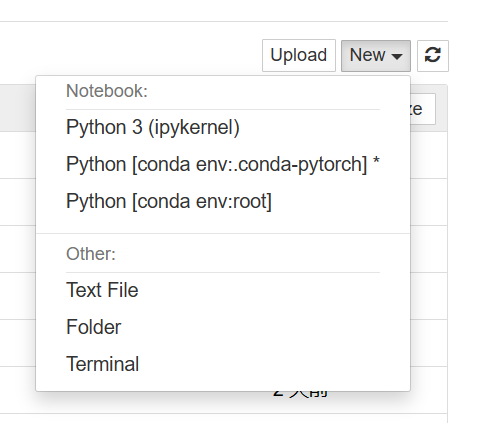
Jupyter中 shift+enter 跳转下一行代码
4.Pytorch中两个重要函数
1 | |

5.Pycharm对比Jupyter
同时在==python==文件、==Python控制台==、==Jupyter==运行一下代码：
1 | |
代码是以块为一个整体运行
Python文件：文件的块是所有行的代码，从头开始运行 适用于大型项目
Python控制台：以任意行为块运行 但是阅读性不好 可以显示每个变量属性
Jupyter：可以以任意代码块运行 利于代码的阅读与修改

6.Pytorch数据加载
1 | |
Dataset
- 如何获取每一个数据及其label
- 告诉我们总共有多少数据
Jupyter可以方便查看Dataset功能

1 | |
read_data程序
1 | |
7. TensorBoard 使用
==探究模型不同阶段的输出图像效果==

writer.add_scalar()

安装tensorboard
1 | |
运行tensorboard
1 | |


==注意：程序运行多次，logs文件中会生成不一样的图像 每向wirter中写入上一个程序 数据会保留==
==删除 logs==
读取图像
wirter.add-image()

==其中image读取类型为==

1 | |
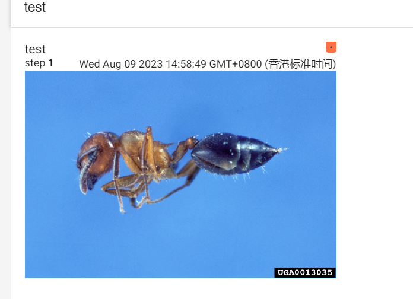
8.Transforms
8.1 ToTensor
1 | |
transforms结构及用法
==利用其中的不同功能实现具体效果==

1 | |
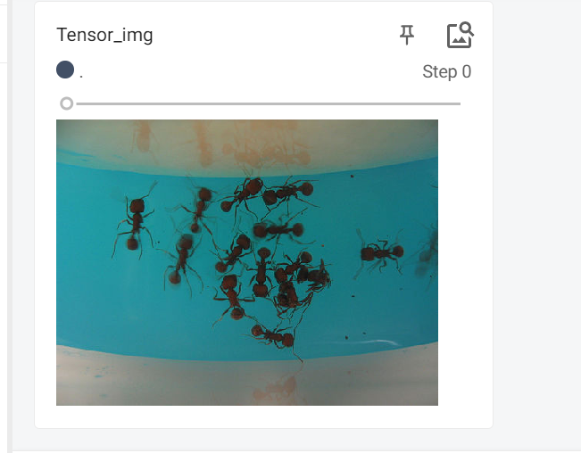
8.2 常见的Transforms
- 输入： PIL Image.open()
- 输出：tensor ToTensor()
- 作用：narrays cv.imread()
Compose
1 | |
ToTensor
1 | |
ToPILImage
*"""Convert a tensor or an ndarray to PIL Image - this does not scale values.*
Normalize
1 | |
1 | |
Resize
1 | |
1 | |
compose_resize
1 | |
RandomCrop
1 | |
- 关注输入与输出
- 学会查看官方文档
- 关注方法需要什么参数
- 不知道返回类型 print print(type) debug
==在Tensorboard使用一定要转换成tensor数据类型==
9.torchvision中的数据集的使用
torchvision 0.9.0版本数据集地址：https://pytorch.org/vision/0.9/
.io 输入输出模块
.models 常见的神经网络模块
.ops 特殊操作
.utils 常见工具(tensorboard)
.transforms
例如CIFAR数据集

1 | |
1 | |
10.Dataload的使用
将dataset获取数据加载到神经网络之中
pytorch 1.8.1 ：https://pytorch.org/docs/1.8.1/data.html?highlight=dataloader#torch.utils.data.DataLoader
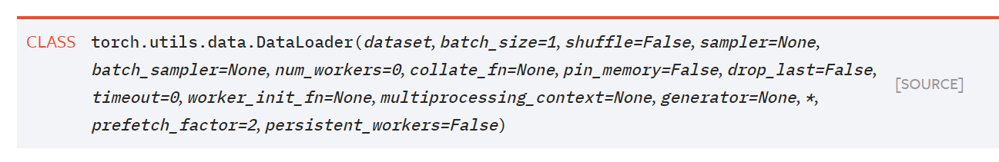
1 | |
1 | |
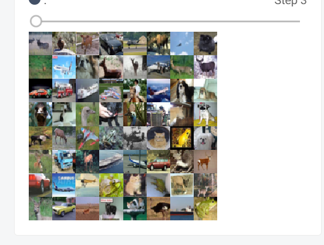

==batch_size=64 每次抓取64张，最后一次剩余16张，由于drop_last设置为flase，即不丢弃最后的16张==
1 | |
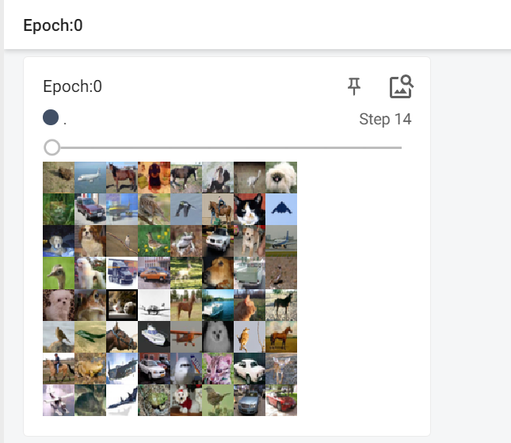
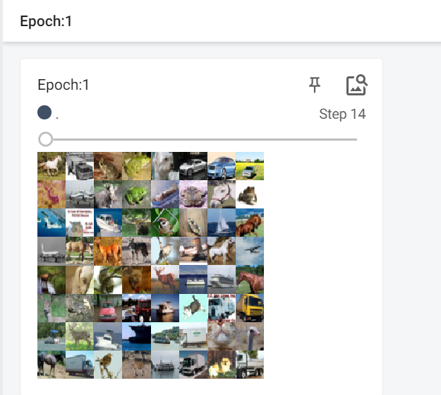
11.神经网络的基本骨架—nn.module
torch.nn:https://pytorch.org/docs/1.8.1/nn.html
.Containers 神经网络骨架
1 | |
1 | |
12.卷积操作
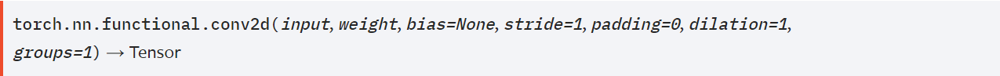

stride：步长
padding：填充操作（1，1）上下左右依次插入空行空列
1 | |


13.神经网络—卷积层
https://pytorch.org/docs/1.8.1/generated/torch.nn.Conv2d.html#torch.nn.Conv2d

参数解释
- in_channels:(N,C
in,Hin,Win) N=batch_size Cin为通道数 Hin为行（高） Win为宽（列） - out_channels:(N,C
out,Hout,Wout) batch_size 始终不变 - kernel_size:(N,C,H,W)
- stride: 步长
- padding:填充（1，1）对输入图像周围填充一行一列
- padding_mode:’zeros’ 填充0
- dilation：空洞卷积


groups: 分组卷积：https://zhuanlan.zhihu.com/p/490685194
bias：偏置 偏置等于卷积核的个数即kernel_size中（N,C,H,W)中的C
1 | |
14.神经网络—最大池化的使用
==最大池化取卷积核框内的最大值==

ceil_mode:True为cell 即对于卷积核当中有空元素（0）的时候 选择保留其中剩下的最大值 默认为False
一般只需要设置kernel_size
1 | |

15.神经网络—非线性激活
Padding Layers 几乎用不到 基本都可以通过卷积层中的padding实现
==Non—linear Activations==
Relu
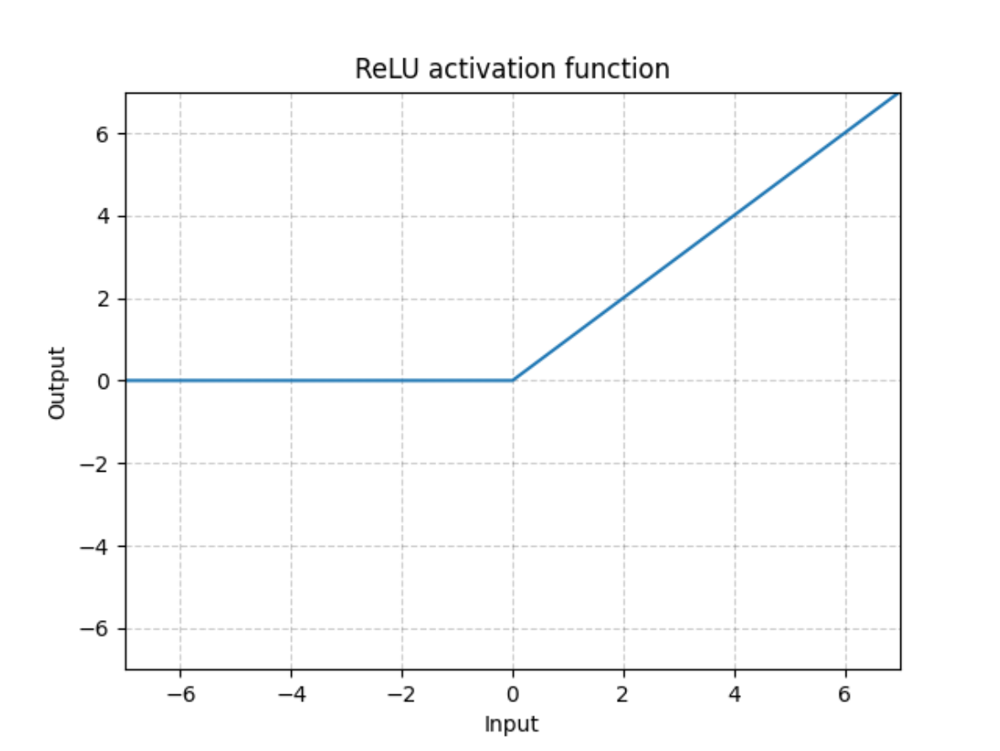
1 | |
Sigmod
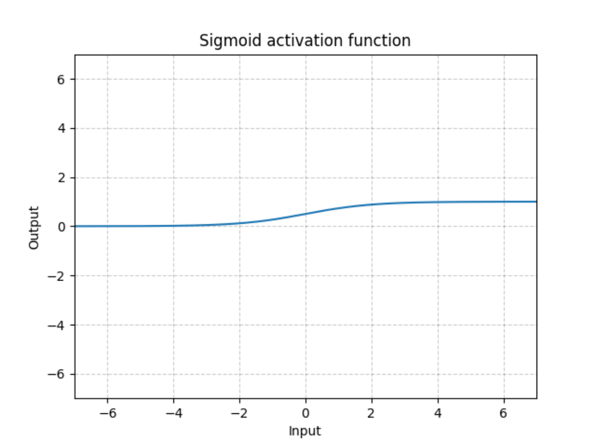
1 | |
==非线性变换的目的：为模型引入非线性特征，提高模型的泛化能力==
16.神经网络—线性层及其他层的介绍
https://pytorch.org/docs/1.8.1/nn.html

Linear(也就是常说的全连接层)


1 | |
17.神经网络—搭建实战及Sequential序列的使用
将神经网络各层连接

CIFAR训练模型

1 | |

18.损失函数与反向传播
Loss Function作用：
1、计算实际输出和目标之间的差距
2、为我们更新输出提供一定的依据（反向传播）
1 | |
交叉熵：Crossentropyloss 分类问题

分类问题输出：output[x1,x2,x3] 分别对应是每一类的概率
Target=0（对应与第0类，对应与x1）只有当target完全命中的时候 -x[class]才会比较小 从而Loss比较小
交叉熵=—x1+ln(exp(x1)+exp(x2)+exp(x3))

1 | |
19.优化器
1 | |
1 | |
20.现有模型的使用与修改
各模型地址：https://pytorch.org/vision/0.9/models.html#id2
分类模型VGG举例(其预训练在ImageNet上进行)
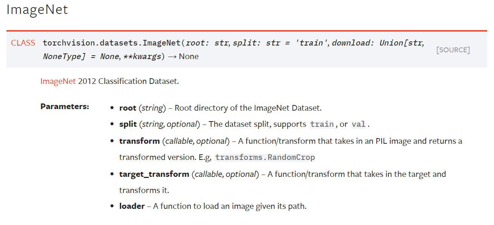
ImageNet需要scipy，且目前已不支持download=True下载
1 | |

1 | |
21.网络模型的保存与读取
1 | |
22.模型训练
以CIFAR10为数据集
==train.py==
1 | |
==model.py==
1 | |
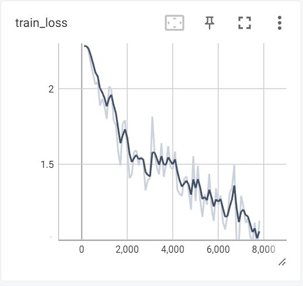
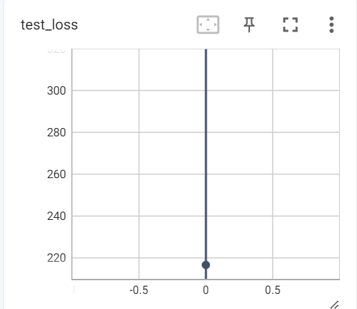
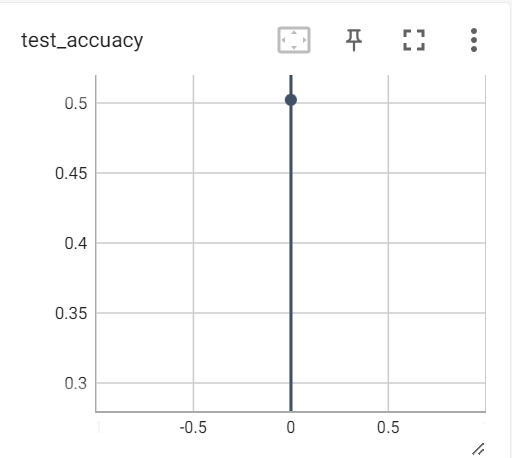
23.CUDA加速
==第一种cpu加速方式：1、网络模型 2、数据（输入、标注） 3、损失函数 调用.cuda()==
1 | |
时间对比：


利用Goole colab云GPU加速
https://colab.research.google.com/
!nvidia-smi

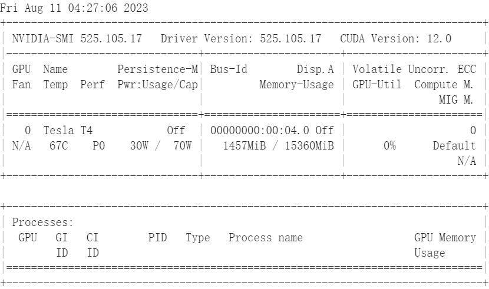
==第二种cpu加速方式：1、网络模型 2、数据（输入、标注） 3、损失函数==
1 | |
24.完整的模型验证demo
1 | |